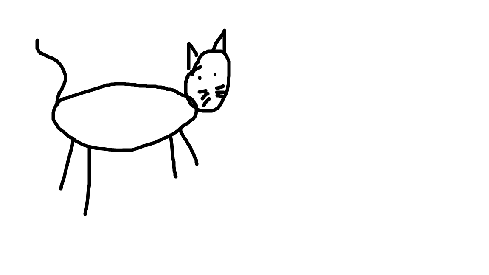
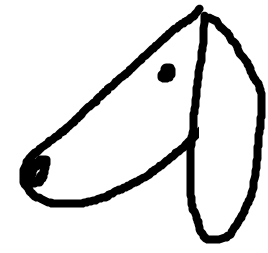

Cat

One of the quick doodles I see my husband draw the most.
There is something so simplistic and charming about him.
He's a reallys cools cat.
Hound

A cute doodle of our beloved Plott Hound, Joy.
She is incredibly simple to draw with two curved lines and two dots, yet you can tell immediately that that is our dog.
Wobbufet and Shiny Wobbufet
These buddies were made to ensure that items were uploading into the system in the correct order.
The blue one is a standard Wobbufet.
The pink one is a shiny Wobbufet.